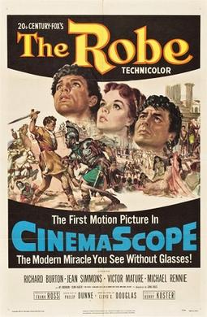

The Robe
26th Academy Awards
(Oscars 1954)
5 Nominations, 2 Awards
| Nominations | ||
|---|---|---|
| Category | Nominees | Result |
| Best Motion Picture | Frank Ross | Nominated |
| Actor | Richard Burton | Nominated |
| Cinematography (Color) | Leon Shamroy | Nominated |
| Art Direction (Color) | George W. Davis, Lyle Wheeler, Paul S. Fox, and Walter M. Scott | Won |
| Costume Design (Color) | Charles LeMaire and Emile Santiago | Won |